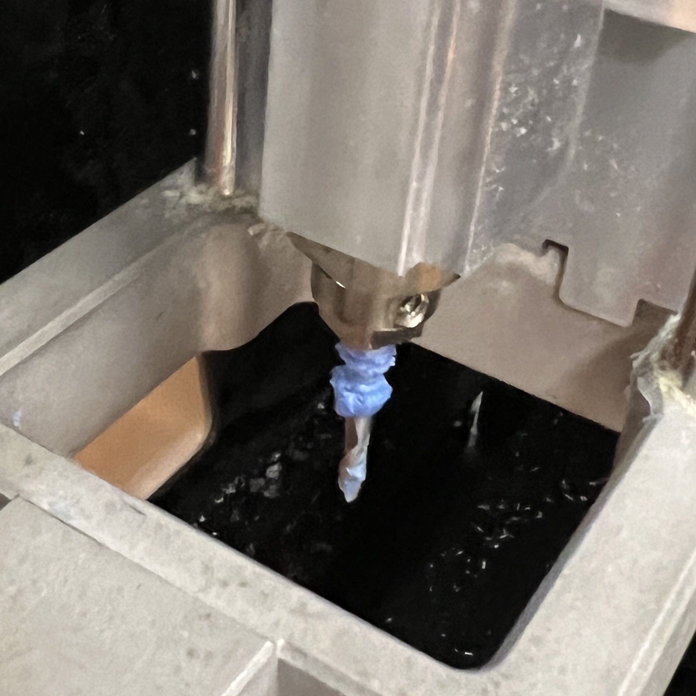
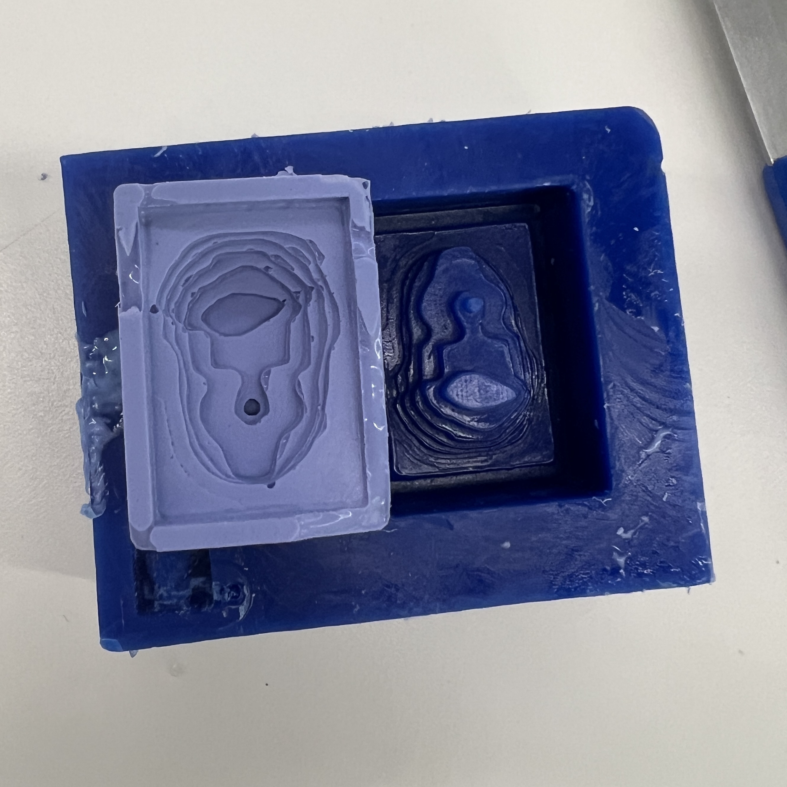
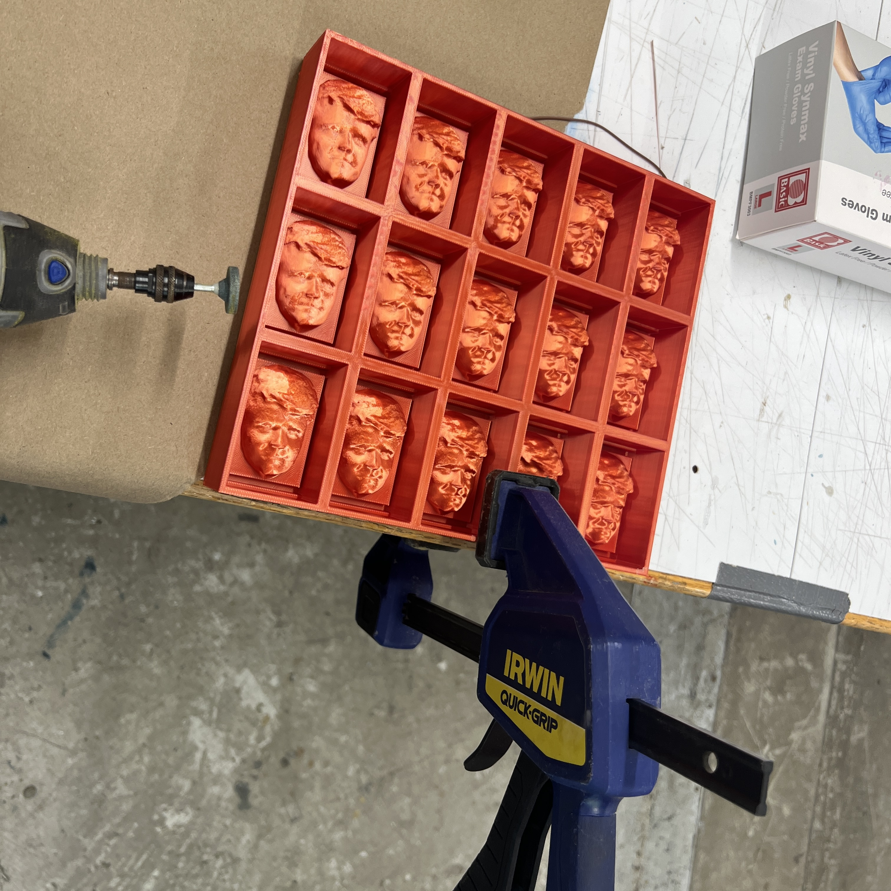

<!DOCTYPE html>
<html lang="en">

<title> Tiger Strake's Digital Fabrication</title>
<link href="https://cdn.jsdelivr.net/npm/bootstrap@5.1.1/dist/css/bootstrap.min.css" rel="stylesheet">
<link href="../style.css" rel="stylesheet">


<nav class="navbar navbar-expand-sm navbar-light background-image">
  <div
    style="align-items: center; justify-content: center"
    class="container-fluid"
  >
    <h3 class="nav-title"> PHYS-S-12: Intro to Digital Fabrication</h3>
    <div class="navbar-nav">
      <h4></h4>
    </div>
  </div>
</nav>
<nav class="navbar navbar-expand-sm navbar-light background-image">
  <div class="container-fluid d-flex justify-content-between">
      <h4><a class="nav-link" href="../index.html" style="color:#EBF2FA;">Home</a></h4>
      <h4><a class="nav-link" href="https://nathanmelenbrink.github.io/intro-dig-fab/index.html" style="color:#EBF2FA;">My class</a></h4>
      <h4><a class="nav-link" href="../about.html" style="color:#EBF2FA;">About</a></h4>
  </div>
</nav>
</html>

<body>
  <style>
    body {
      background-color: #486484;
    }
  </style>

<xmp style="display:none;">
<br> 
<b>
<font size="5">
CNC Milling and Casting/Molding
</font>
</b>
<font size="4">
  In this class our task was to design something and make it using CNC. 

As moldmaking is generally used to create multiple copies of something in an affordable and easy way, I decided to manufacture funny paperweights as a Christmas gift for my family and friends! The design of the paperweight would be my face;-)!

For this task I used the Roland SRM 20 CNC machine and machinable wax for casting/molding.

For the scan of my face I used the Polycam scan from last week's assignment and Fusion 360 to model an enclosure for the molding/casting as seen here.
<br>
<br>

<br>
<br>
An important feature was the barrier I designed around the face in order to hold the silicon mold rubber in place.
<br>
<br>

<br>
<br>
I used the 2.5d pre-set and configured the machine settings accordingly. As an end mill I chose the 1/8“ flat end mill to remove most part of the wax to shape my face roughly. My plan was to use a smaller end mill in a second step. Unfortunately, the wax did not hold on the sacrificial bed layer, so I had to stop the milling. I think the failure was caused by the end mill moving too fast and melting the wax. After it failed, I found molten wax on the end mill:
<br>
<br>

<br>
<br>
I tried again using another location on the board and roughened the surface before putting the wax on it. The milling took about one hour. I was surprised that it took so long as the prototype was fairly small, about the size of my thumb. As the lab closed, I had no time to use a smaller end mill to smooth the model. Generally, the rough milling is faster and the milling with a smaller end mill is slower, but more detailed. I decided to leave my face like that and call it modern art. This is a picture of it next to the cast I made:
<br>
<br>

<br>
<br>
After that we had to create something by molding and casting. I used my modern art tiny mold and filled Oomoo in the negativ. I waited a day to let it cure. The overall result was okay, but too small and too rough. Furthermore, there were air bubbles in both mold and cast.

In order to have multiple and more detailed molds of myself, I printed the same model of my face with my 3d printer from Bamboo Lab in my room at Matthews. I printed an array of fifteen faces. It looked like a creepy Tiger’s face wall when I looked at it. It was much more detailed and quicker as the former CNC model.
<br>
<br>

<br>
<br>
I filled two of the fifteen molds of my face with the silicon rubber, waited a day and was delighted that the accuracy of my face of the new mold was much better. I still had air bubbles in the mold but I was able to trim them. Next time I will try to put the object into a vacuum chamber to get rid of all the

Now it was time to mix the plaster. I did not know the exact ratio of plaster and water, so I tried with trial and error. More water meant more liquid and, thus, the small corners and edges could be filled in a better way. The drying time was pretty short (about 10 minutes). After that I had to free my face from the mold, which worked fine. All in all, I prefer the face from the 3d printed mold rather than the CNC art version. 
<br>
<br>

<br>
<br>
  <br>


</xmp>
</body>

<script src="../strapdown.js"></script>
<script src="https://cdn.jsdelivr.net/npm/bootstrap@5.0.2/dist/js/bootstrap.bundle.min.js" ></script>

</html>